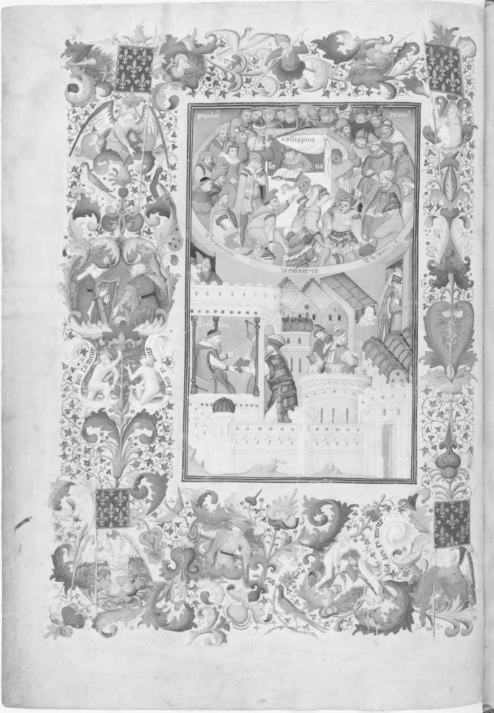
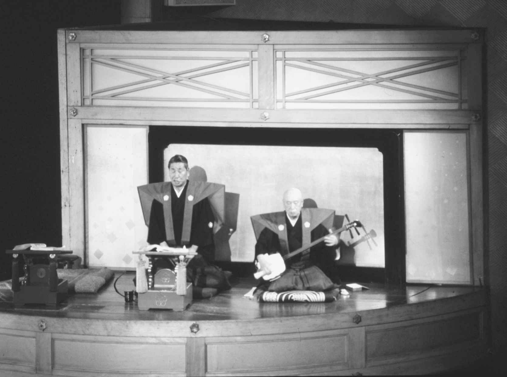

如同theatre，英文drama的词意林林总总，不一而足，但当与theatre这个词并置，特别是谈论诸如大学的theatre与drama系的研究领域的时候，这两个词的并列组合即意味着这个系不仅研究“戏剧文学”（drama），即书面文本，也研究“演剧”（theatre），即书面文本的演出。正如我在开头第一章中所讨论过的，西方戏剧中这两者之间的联系从来都是极其紧密的。从希腊人开始，西方的戏剧照例是先有人创作文本，然后那个人和/或其他人在观众面前搬演文本。我已指出，戏剧与文学之间的这种紧密联系并非在所有的戏剧文化中都能找到（而且在西方文化内部也不是普遍的）。因此，我在本章中将不囿于西方的观念，在检视舞台搬演材料的来源和性质时，并不考虑这样的材料是否源自书面文本。
虽然即兴表演在世界戏剧范围内只占很小的一个部分，但很多文化中都有即兴演出，场上的对话和动作都是临时发挥。大量证据表明，很多文化，可能是大多数文化中都是先有即兴表演，然后才有人为表演编写剧本或建立一个重复同样或相似戏剧行为的表演传统。远在任何书面戏剧文本被发现之前，中国和中东就有宫廷优人呈现常常是讽刺性的即兴演出的记载。
亚里士多德认为，赞美酒神狄俄尼索斯的酒神颂是希腊古典悲剧的先驱。尽管随着时间的推移，这些颂歌都成为文学作品，但最初却是诗人演员的即兴狂欢之作，这位诗人演员引领酒神颂合唱队，朗诵宛如神灵附体激发出来的诗句。其时，即兴式的表演还有下流粗俗的戏剧小品，虽然没有酒神颂那么体面，却是随处可见，比比皆是。这些即兴小品戏弄传统的神话或历史人物，调笑平淡无奇的日常生活。这样的娱乐表演是全世界通俗文化的一个组成部分，但对这些大众表演的深入研究却一直都在对希腊和罗马的古典与前古典时期的研究中展开，也在先于古希腊喜剧的墨伽拉笑剧、前古罗马时代的伊特鲁里亚狂欢节，以及更广为人知的阿特拉闹剧和早期默剧的研究中展开。这些表演在公元前3世纪就被详细地记载下来，无疑早在此之前就有了这样的表演。
与即兴表演关联最为密切的戏剧传统是即兴喜剧。即兴喜剧兴起于16世纪中叶的意大利，在接下来的两个世纪里占据着欧洲剧坛的核心，今天不仅在欧洲而且在全世界影响犹存，充满活力。到了18世纪，“即兴喜剧”成为这种演出形式的标准叫法，但这种戏剧形式最初的名称是“即兴表演的喜剧”，以强调与基于文本的文学性喜剧的不同，后者由当时的文艺复兴剧作家先驱创作。
然而，这种即兴式戏剧的自发性却远不及酒神颂领唱吐出的狂欢诗句，表演也远没有中国宫廷优人的即兴讽刺来得自然。即兴喜剧是既定表演要素和自由发挥要素的复合体。首先，即兴喜剧无一例外是一种集体创作——由五到十人组成的剧团演出；他们通常是家族成员，一般都是数年在一起随团演出。每一个演员担当一个特定的角色，并与其他角色构成某种特定的关系。即兴喜剧的起源尚不清楚，但这种戏剧形式与罗马帝国时代的阿特拉闹剧有诸多令人感兴趣的相似之处——阿特拉闹剧里也有穿着奇装异服戴着面具的类型化人物。一个典型的即兴喜剧剧团会有两对相爱的年轻男女，他们不戴面具；也会有各色佩戴面具的角色，主要是仆人和滑稽可笑的男人，其中最常见的三个角色是吝啬鬼潘塔龙、爱吹牛的西班牙船长和一身酸腐气的郎中。他们每一个人的面具和衣着打扮都已形成了传统，一上场便知他们的喜怒哀乐。尽管没有剧本，大多数剧团却都根据叫作“脚本”（scenarii ）的提纲演出，提纲列出每一场演出的大体剧情和上场人物。演员在提纲的基础上临场发挥，即兴表演，尽管这样的演出也是混合着即兴的和固定的表演成分。每个演员都记熟一些叫作“拉齐”（lazzi ）的设定的台词和动作，适当的时候它们可以嵌入某一场戏中。
虽然即兴喜剧及其衍生出的戏剧形式，如流行的英格兰的《潘趣与朱迪》木偶戏、法国的哑剧丑角戏和德国的汉斯伍斯特滑稽喜剧，在后来的几个世纪中都继续以即兴表演的方式活跃在舞台上，但到了17世纪中叶，剧作家们便利用即兴喜剧的情节和人物类型创作文学剧本，莫里哀便是他们中最著名的一位。一个世纪以后，威尼斯的卡洛·哥尔多尼肩负起赋予即兴喜剧以文学地位的使命，利用其主题创作了一批演出脚本；哥尔多尼是威尼斯人，而威尼斯是即兴喜剧的一个可能的诞生地。
西方传统的即兴式戏剧从18世纪起就难登大雅之堂，只在热闹的街道、夜总会和游乐场演出，而剧场上演的几乎无一例外是书面文本的戏剧作品。然而，在非西方世界，特别是拥有强大口头表演传统的地方，基于即兴表演和观众参与的大众和社区表演在今天仍然是最为人们熟知的戏剧形式。20世纪，研究非洲的学者常常把欧洲与撒哈拉以南的非洲进行对比，因为欧洲已经从口传文化发展为书面文化，而非洲却依然是一个口传文化占主导地位的区域。随着现代对口传文化兴趣的高涨，关于书面和口头之间差异所隐含的价值判断——口传文化跟书面文化比较起来原始粗俗有余而典雅精致不足——已大为减少，但是其基本观察仍然是有效的。尽管与欧洲的读写文化相联系的殖民计划在非洲产生了巨大的影响，口头传统在非洲的大多数地区却仍然非常强大，而且还因为近些年来针对欧洲影响的后殖民反应得到进一步加强。不依赖文本的口头戏剧表演，无论是神圣的还是世俗的，乃至神圣世俗兼而有之的，在今天的非洲仍然势头强劲，而且在非洲很多地方，如尼日利亚、塞内加尔、赞比亚、南非和津巴布韦，构成了地方文化的主体。并非所有这样的表演都是以我们刚刚所提及的社区戏剧的方式展开的即兴式演出。还有一种表演传统，如同传统的仪式表演，通过记忆尽可能原封不动地一代一代传承下来。此外还有即兴表演和记忆下来的固定表演片段相结合而成的混合形式，这样的混合形式有点儿像即兴喜剧，或者说沿袭了世界很多地方的说书传统，比如在中东各地被称为“哈卡瓦提”（hakawati）的传统说书人的表演，或印度尼西亚影戏的戏偶操作师兼影戏说白者“大朗”（dalang）的表演。大朗师在影戏中身兼数职，在长达九个小时的表演中既要操控几十具戏偶，又要为戏偶人物配音。
说书人照本宣科式地诵读（或吟唱）的演出比较少，他在其中一般是为戏偶或不出声的真人演员的舞台动作同时配音，也常常具体地描述这些动作。说唱人为戏中人物配音的最著名例子莫过于日本的文乐，文乐从17世纪早期刚刚兴起的时候起就有说唱者“太夫”全身出场，照着摊在他面前的“床本”讲述剧情。他衣着考究，绘声绘色地讲述描摹所有的登场人物，以此吸引观众的注意力，在表演中成为与影戏一样重要的焦点。古希腊和古罗马的默剧和哑剧表演也伴有单声吟唱或多声合唱来演述剧本。剧本是否像日本文乐那样摆在面前则无从知晓，但是文艺复兴时期泰伦斯作品最早的一个版本（1400年左右）中有一幅精彩插图显然表现了一个无声表演片段，画中舞台上的一位歌手和一本书清晰可辨，宛如文乐中的说唱者就着“床本”演述剧情。这幅插图综合了各种各样的元素，无法被看作精确地描写了某个具体的演出。比如，插图中那个手持一本书的吟唱者被确定为“卡利奥皮乌斯”，他实际上是泰伦斯作品的一个早期编辑，而这个人直到15世纪还一直被认为是泰伦斯最喜欢的演员。插图中在他面前的表演者，从神态、衣着和面具来看，似乎更可能是出自晚期古典默剧而非直接取自古典演出的上场人物（图5）。尽管谈不上精确，这幅插图却清楚地表明，文艺复兴最初仍然存在着一个明确基于文化记忆的臆测，即晚期古典演出中，戴面具的演员由手持台本随行的朗诵者/吟唱者陪同表演。

图5 文艺复兴时期假定性重构的泰伦斯古典演出场面
排斥任何既有文本的即兴式戏剧在20世纪初于西方剧坛重获重要地位，但起初并非作为一种表演技巧，而是作为一种训练演员的手段为戏剧大师所运用，如俄国的康斯坦丁·斯坦尼斯拉夫斯基和法国的雅克·科波，然后为他们无数的追随者所仿效，其中就有美国的维奥拉·斯普林。她在20世纪中叶开发了各种各样的即兴式表演练习，将其称为“戏剧游戏”，这样的“戏剧游戏”又反过来启迪了现代即兴表演的一个重要传统，这个传统通过诸如斯普林的儿子保罗·西尔斯1959年在芝加哥创立的“第二城市”这样的剧团而发扬光大。20世纪60到70年代，很多关心政治的剧团，如奥古斯都·波瓦的巴西“论坛剧场”和旧金山“默剧团”，发现即兴表演是一种非常好的手段，能够与观众直接联系起来，并对政治事件迅速做出反应。
尽管存在着诸如哑剧、即兴喜剧和现代即兴戏剧这样一些重要的非文本戏剧传统，西方世界却从古希腊和古罗马时代开始就普遍认为，演剧艺术就是把已经写就的文本搬上舞台演出。这样的认识也见于一些亚洲的戏剧传统中，但随着殖民计划而传播到世界其他大部分地区。这样的殖民计划始于15世纪西班牙对新世界的征服，一直延续到20世纪前殖民地纷纷获得独立而告终。随着舞台演出剧本的模式在全世界取得支配地位，很多一代又一代在没有任何文字的提示下演出的口传文本被西方作者转换成书面文本。这样，据称16世纪起就以口头形式存在的印加人最著名的戏剧《奥扬泰》，直到18世纪80年代才被安东尼奥·巴尔德斯用西班牙语整理成书面形式。另外一部幸存下来的重要戏剧是危地马拉的《拉比纳尔的武士》，这是一部产生于15世纪的玛雅舞剧，最早是在1856年由一位法国传教士整理成文。其后，先是人类学家，接着是戏剧学者用文字记录下大量来自非西方世界的口头演剧材料。
然而，非西方世界很多地方都有悠久的书面戏剧传统。梵语从根本上说就是一种文言文，主要用于宫廷记事以及类似的材料。以梵文创作的戏剧作品有片段从公元1世纪遗存下来；这些作品典型地将语言置于动作之前，剧中有大段大段的诗句，而很多动作却被置于幕后，通过叙事表达出来。东南亚在9世纪就已经有了文字载录的史诗作品，也可能那时就有了戏剧文本的创作，可即便如此，书面戏剧文本却没有任何遗存。到了15世纪，东南亚很多受印度影响的宫廷和寺庙都保存了各种各样的梵文文本；可以设想，从15世纪起演员就从这些梵文材料中获取素材。英国的东南亚戏剧权威詹姆斯·布兰登认为剧院经理根据这些以及其他材料来编制“手册”，用途有如意大利即兴喜剧的剧情概要，即通过零星的对话、歌曲和其他材料来提供剧情梗概，而演员则凭此编排表演；这样的表演部分是即兴的，但主要还是根据口头传统传承下来的材料进行。布兰登注意到18世纪末爪哇各个宫廷出现了书面戏剧文本，但他认为这是例外；一般而言，东南亚的戏剧表演都是运用口传的剧情概要和对话。这种情形并不因为识字率的提高和印刷术的引进而发生显著的变化。即使在今天，“哇扬”皮影戏——印度尼西亚最重要的戏剧形式——的表演也不受文本的约束，尽管那时表演都已经以书面形式记录下来，并且后来表演的都是西方人（包括布兰登自己）翻译的更加常规的戏剧文本。
基于书面文本的戏剧在中国13和14世纪的元朝首次成为中国戏剧的一个重要组成部分，可是几乎在同时日本产生了更加强调书面文本的能乐。尽管能乐讲究视觉场面，但从世阿弥创作的第一部作品起就扎扎实实地建立在书面文本之上。今天能乐可供演出的剧目大约250部，这些作品对戏装、风格和各种各样的表演细节都有详细的指示。可供演出的剧目核心是世阿弥亲自创作的作品，占了总演出剧目的三分之一以上，其风格和结构为后世所仿效。很多后来的歌舞伎和能乐作品也都是从这些作品中发展起来的，尽管两者都非常重视视觉场面，但都基于书面文本。这一点尤其清楚地体现在文乐中，文乐中的演唱者/叙述者（“太夫”）穿着考究的传统服装，坐在邻近乐师的舞台一侧，照着面前摊开的“床本”念诵。如同传统的说书人，他既是剧情的叙述者，也为所有单个上场的人物配音。“太夫”不断变着腔调、手势和面部表情，以示不同的场上人物。这样，他便与台上的戏偶一样成为视觉场面的焦点，观众一边观赏这位文本的传达者，一边观赏台上的表演（图6）。

图6 文乐演出中的叙述者（“太夫”）
戏剧文本在西方戏剧传统中一直占据着中心位置，其历史之悠久与一致之程度远超其他所有戏剧文化。正如我先前所提及的，亚里士多德将戏剧的文学一面置于优先的位置，他把诗歌创作分成史诗、抒情诗和戏剧诗，并分析了它们的文学性，但对戏剧文学的实体形态视而不见。从此这种强调文学文本的分类原则便成为欧洲人论述戏剧的一个共同特征，至今不变。书面文本和文本舞台演出之间的紧密关系，因为特定文本与特定演出以及贯穿于大部分西方戏剧史的演出传统之间存在的紧密联系而得到强化。在现代，戏剧文本和文本的演出一般在很大程度上是分离的。即使一部戏由某一个特定的剧团所创作，或者由因排演这部戏而特地聚集起来、演完则各奔东西的一群特定演员们所创作（这种情况在美国商业性的大剧院更加普遍），这部戏的剧本一旦出版也会上市销售并自由流通。只要愿意支付版权费，任何人都可以在演出条件不同的其他剧场搬演这部戏。
19世纪前，当剧本开始比以往流通得更广的时候，西方的情形总的来说跟现在大不相同。那时候演出都是根据剧本进行，于是这些剧本一般都为剧院或是最初为其创作的剧团所有。比如，在伊丽莎白时代的英格兰，剧作家一般是把自己的剧本出售给某一个剧团，这个剧团理论上便是这部戏唯一的演出团体。出版时代之前，通常这个剧本只存有一部全本，即剧团的台本，上面添加有灯光和音响说明、上下场口以及所有用来指导这部戏实际演出的提示。那时就有人装作观众混入剧场看戏，暗中把所看的戏照原样复制。尽管地下流通着这样的盗版物，但某个剧本与某个特定的剧院或演员团体之间的联系仍然是牢固的。随着印刷时代的来临，剧本与其他文学艺术一样也主要通过印刷的方式流通，虽然如此，但这种流通既不快速也不自发产生，因为即便像莎士比亚这样大名鼎鼎的剧作家在致力于创作一直以来都被奉为文学名著的作品，总体而言人们也依然认为这些作品最初被创作出来的时候只是为演员所用。当时，在寻求出版的文学作品和并不寻求出版的演剧作品之间仍然存在着鸿沟。
事实上，莎士比亚大约一半的剧本都在第一次搬上舞台后很快出版，但这并未赋予它们文学作品的地位，因为印出来的都是四开本。从印刷术的发明到莎士比亚时代，四开本都普遍用于各种各样的小册子、布道文、歌谣和其他读完即弃的东西。对开这样的大开本则用于印刷更加昂贵和严肃的文学作品。琼森当时就把他的作品以对开本的形式结集出版，他是第一个用大开本出版自己作品的英国剧作家，以此明确地宣称自己的剧作应该被当作文学作品来看。琼森的对开本出现于1616年，即莎士比亚逝世的那一年，而莎士比亚的对开本戏剧集直到七年后才问世。
剧本的出版发行为这些文本更为广泛地在剧团和演员中流通提供了机遇，因为其他的表演场所不再需要依赖来源极不稳定的盗版，但实际上，这样的流通在17和18世纪都是极为有限的。在这一时期，出版剧本要么是供人阅读，要么在某些情况下供一些业余演出团体之用，因为政府严格规定，公开出版的大多数剧本的专业演出仅限于国家资助的特定剧院，而这些剧本就是为这些剧院创作的。早在1402年，法国的耶稣受难剧团获得了在巴黎演出宗教剧的专享权利；1582年，尽管某些宗教剧遭禁，但耶稣受难剧团却是唯一一个获准在巴黎及其邻近地区演戏的剧团。如此，从欧洲文艺复兴之始，法兰西剧院就获准拥有自己的上演剧目，这些剧目其他任何剧团都不能上演。这个为法兰西剧院开创的先例后来也总体上按照同样的模式为欧洲很多国家剧院所效法。这样，直到法国大革命以前，只有法兰西剧院可以上演莫里哀、拉辛以及众多其他剧作家的作品，而这些作家的作品都是由法兰西剧院首次搬上舞台。
政府行为大大强化了个体剧本和它们的舞台演绎之间的紧密和持续不断的关系，这种关系是自浪漫主义兴起以来最为紧密的。在西方，特别是在欧洲，几乎普遍存在的剧院组织模式传统上一直遵循着一种模式，它在世界上任何确立了不断发展的专业剧院的地方都能发现。处于这种剧院核心的几乎总是某个演员团体，这个团体在某些情况下由家族成员组成，他们长期——可能数十年——在一起工作。如同其他行业，演戏这个行业的运作常常通过某种形式的师徒制度来实现；在这个制度中，年长资深的成员培训团里的新成员，期待他们一代一代地传承下去。作为一种惯例，他们的传授不仅包括一般的动作和声腔技巧，还包括如何具体地搬演某部戏，甚至于某个具体的角色或角色类型。能乐以精心保护下来的表演传统而著称，在这样的表演传统中，同一部戏在重复演出时都有着基本一致的手势、衣着、动作和台词。西方的大多数戏剧也差不多同样地（只是不那么严格地）保留传承一些特定的表演技巧，这种情形直到18世纪晚期才有所改变，有的戏剧则贯穿整个19世纪。年轻演员按角色行当进行培训，被置于诸如“伶俐机智的女佣”“天真无邪的少女”或是“脾气暴躁的老头”这样宽泛的范畴中，英国人称之为“业务领域”（lines of business），法国人称之为“专演角色”（emplois ）；不仅如此，一部戏里的每一个角色类型，常常甚至于每一个特定人物的形体动作、手势和对白都像能乐中的舞台动作那样由师父忠实地传授给徒弟。此外，某部特定的戏剧作品只能由某个特定的戏院演出，一切都是按照师徒的世系传承这种模式组织调动起来的；于是，在欧洲近代早期的戏剧中大多都能看到戏剧文本与文本演绎之间，哪怕是演绎的细枝末节之间十分密切的联系。
戏剧文本与舞台演出之间的这种紧密联系在法国，特别是17世纪中叶以后的法国，表现得最为明显。那时的法国，循规蹈矩的新古典主义思潮取得支配地位，此外传统的力量、针对演剧的繁文缛节以及公共生活的几乎每一个方面，都强化了戏剧文本与舞台演出的联系，阻止了任何重要的改革。哈姆雷特吩咐丑角们“得按写好的台词，不可由着他们信口胡来”，他担心的丑角添油加醋的情形，是不可能出现在法兰西新古典主义舞台上的，特别是在搬演严肃的戏剧作品时，更不可能出现人物即兴胡诌的场面。因为严肃的戏剧需要严格地按照传统的亚历山大诗体来创作，这样一种僵化死板的诗歌体几乎不会给演员任何机会来变动一个词，也不会给演员机会来改变任何一句诗行的韵律。法国戏剧主导了欧洲大陆剧坛，这使得剧本凌驾于表演之上的权威也波及从西班牙到俄国的戏剧演出。18世纪的欧洲大陆，伏尔泰的新古典主义理论和戏剧作品处于至高无上的统治地位。受其影响，剧作家们试图将亚历山大诗体这样的诗歌形式强加在如丹麦语这些不合适的语言上，效果不一。
尽管在17世纪晚期对法国的戏剧实践有过一段跟风期，但英格兰却以一种更为自由的眼光审视文学文本与表演文本之间的关系，这在莎士比亚的戏剧中表现得最为清楚明了。随着声名渐起，作品的地位日渐重要，莎士比亚也日益偏离法国人对法国古典作家文本的那种持之以恒的忠诚。17和18世纪的英格兰，放在案头供人研究和阅读的莎剧与供英国戏剧舞台演出的莎剧之间的鸿沟不断扩大。演剧者随心所欲地增加、删减或重新编排台词、场景和人物，像《李尔王》和《罗密欧与朱丽叶》这样的悲剧的结构被改为欢快的结局，音乐和盛大的场面也增添到像《麦克白》这样的戏剧作品中。大卫·加里克是他那个时代英国剧坛最伟大的人物，也是莎士比亚的忠实拥趸。他在18世纪晚期坚决主张摒弃篡改剧本的做法，呼吁原汁原味地在舞台上搬演莎士比亚的作品。可是，尽管加里克坚定地倡导回归莎剧原本确实鼓舞了后来的演员和制作人，他也远远没有在舞台上做到精确地演绎莎剧文本。
加里克不折不扣地把莎剧的台词搬上舞台，这样的做法成为19世纪剧坛的主流。当时的文化对历史研究兴趣日浓，于是开启了关于出版物的四开本和对开本的认真研究，不断地尝试从中汇集整理出一个权威的文本，很多戏剧团体也专注于忠于原文的演出。于是，书面剧本与演出剧本之间的关系要比英格兰文艺复兴时期以来的任何时候都更加紧密。与此紧密相关的是历史决定论者对于英格兰以及其他地方从文本台词到演出场景都要一一照搬还原这些戏剧作品的兴趣。浪漫派剧作家路德维希·蒂克在19世纪早期便将这样的关切引入德国剧坛，这种关切差不多到19世纪末期才得到最充分的实现，体现在威廉·珀尔以及他的伊丽莎白演剧协会轰动一时的演出中。这个协会在1895年至1911年间将一系列莎翁和莎翁同时代剧作家的作品搬上舞台，试图再现莎翁时代的演出场景。
浪漫主义运动引发了对现代历史决定论的兴趣，这场运动在国际范围内视莎士比亚为浪漫主义的核心灵感，但浪漫主义思想一般来说并未鼓励剧本与演剧的合流。相反，这场运动的一些旗手，如英格兰的查尔斯·兰姆和德国的歌德，都以十分怀疑的眼光看待在舞台上搬演莎剧，认为只有把莎士比亚的戏剧作为文学作品——而非供演出的台本——来读才能完全体会莎翁的文学天才。他们关切的是，莎士比亚作为浪漫派的天才，已经直接透过他的文词表达了他的远见卓识，而任何具体表演附加上去的东西，无论效果如何，都会稀释、消解原文表达的纯洁性，抑或将人们的视线从这种纯洁性上转移开来。今天，一些具有文学倾向的评论家仍然表示担心任何舞台演绎都会限制或扭曲艺术家创作愿景的纯粹性，这样的忧虑继续造成书面文本和表演台本各自拥趸之间关系的紧张。
不仅仅是文学理论家表达过诸如此类的疑虑。几乎就在研究文学和演剧的学者均致力于发掘和搬演最接近莎士比亚戏剧原创文本的同时，戏剧理论家掀起了一场差不多是针锋相对的运动，在戏剧表演与戏剧文学之间打进了一个楔子。这次运动最有影响力的领导者可能就是英国理论家和舞台设计师爱德华·戈登·克雷，他坚定主张戏剧应彻底摆脱对文学的依赖，发展为一种别具一格的艺术形式，不依赖文字，而是建立在节奏、声音、灯光和移动形式的基础上。克雷不将剧作家视为主导演出的原动力，而是大力提倡新兴的戏剧艺术家，即现代意义上的导演来主导戏剧演出的整体效果。
自从19世纪末戏剧导演崭露头角以来，决定戏剧演出的终极因素究竟该是文学文本（及其演出传统）还是导演的设想这样的问题持续不断地引起常常是情绪化的争论。20世纪下半叶，当彼得·布鲁克、乔治·斯特雷勒或阿里亚娜·姆努什金等大导演在全球很多地方都要比他们自己国家的任何同时代剧作家更负盛名的时候，这样的争论较之过去有过之而无不及。欧洲大陆的戏剧导演经常如此主导支配他们所使用的戏剧文本，以至“导演剧场”（Regietheater ）这个德语词汇随之声名远扬。这个词汇有时候用作中性词，但经常作为贬义的术语被使用。尽管这种全盘掌控的导演与欧洲大陆的剧坛尤其相关，但全球各地都涌现出很多类似的人物，例如日本的蜷川幸雄或铃木忠志、阿根廷的维克多·加西亚和新加坡的王景生。
如果说自戈登·克雷以来很多戏剧实践家赞成将戏剧文学与戏剧表演分离开来，特别是以将导演置于剧作家之上并令其掌控戏剧演出这样的方式，戏剧学者也以一种不同的方式在这方面推波助澜，把演剧学发展成为异于文学的新兴学科。19世纪末和20世纪初，演剧实践和演剧研究的这些平行运动同时出现，这绝非偶然。
文学作为大学学科出现于18世纪，学习以各种民族语言创作的戏剧作品被视为文学的一个必不可少的部分。实体表演则被全然忽视，用20世纪初美国的一位著名文学理论家乔·斯平加恩的话说，这是因为戏剧表演之于研读戏剧作品就如同印刷史之于研读诗歌一样无关紧要。最早一批研究戏剧表演的学者出现于19世纪末和20世纪初，他们都来自文学系，对这一观点抱有异议，因而引起了他们前任同事不小的反对。1900年，布兰德·马修斯被哥伦比亚大学聘为英语国家大学中第一位戏剧文学教授，尽管这一头衔并不一定名副其实，但他却突破戏剧文学研究的藩篱，反而视戏剧表演研究为己任。这种突破在德国学者麦克斯·赫尔曼——欧洲第一位倡导研究戏剧表演的学者——身上表现得更为明显。赫尔曼1900年做了他关于戏剧表演的第一次演讲，1923年在柏林告别了业已确立的文学研究领域，不顾同事的反对建立起第一个戏剧表演研究机构。自这些开创性的努力以来，演剧已经在西方大多数高校成为一门被广泛接受的学术领域。可是在美国，尽管这一学科普遍被冠以“演剧与戏剧文学”这样的名称，大学中很多学院内部仍然对像莎士比亚这样的艺术家的教学究竟应该放在戏剧系还是放在文学系这个问题有所争议。
演剧与戏剧文学之间的确切关系是20世纪中叶研究演剧与戏剧文学这两门学科（也是很多其他学科研究）的最重要的理论——符号学——所要解决的一个核心问题。符号学最初是由20世纪30到40年代布拉格的一群研究文化与语言学的学者建立起来的，到了20世纪60年代，符号学理论作为研究各种文化现象的主要分析工具而再度兴起，并对全世界的理论话语体系产生了影响。如应用于戏剧表演研究中的那样，符号分析主要解决的是分析戏剧文学作品及其场上表演之间确切运作关系的问题。符号学家的研究策略源于语言分析，总体而言他们寻求将人类文化的产物视为“文本”来分析它们传达信息的能力。这样，他们把戏剧文学称为“书面文本”，而把戏剧表演叫作“演出文本”。安娜·乌布瑟菲尔德，一位杰出的法国符号学家，认为书面文本是不完整的，它有意识地留下空白（她称之为troué，即“空洞”），以待剧场表演来填补。她的这个观点并不为众多戏剧符号学家广泛认可，他们偏爱文学，更倾向于认为书面戏剧作品无论经历剧场演出与否，本身就是完整的艺术创作。他们中通行的看法就是这两种文本为完全不同的语言，这样把一部戏搬上舞台的过程便会涉及把书面文本转换成演出性文本。这就如同翻译，一方面努力寻找对等的词语，但又承认翻译会不可避免地对承载信息的形式以及信息所表达的内容做出不小的改变。
20世纪晚期西方兴起了表演学这一学科，为戏剧文学与戏剧表演之间长期的协商增加了一个新的维度。我在前已出版的著作中讨论过符号学这门新兴学科对戏剧表演研究的诸多影响，但在这里我只想说明，表演因倾向于演出过程而在很大程度上扩大了书面戏剧作品与其在剧场的演出之间业已存在的鸿沟。这种新的倾向性的国际影响力日益扩大，确保了表演学专注于表演，并相应削弱了表演与前已存在的文学文本之间的关联，从而在全球很多地方加强了文本和演出之间的分离倾向。
关于演剧近来引用频率最高的一个理论表述就是汉斯——蒂斯·雷曼1999年出版的著作——《后戏剧剧场》。尽管雷曼聚焦于17世纪以来的西方戏剧理论和实践，但他还回顾了20世纪初的先锋派，其中克雷和其他人主张导演是独立的艺术家，并且特别回顾了彼得·斯丛狄1956年以德文出版、1987年又译成英文的《现代戏剧理论》这部著作。以其他语言写成的重要著作没有及时翻译成英文，这样不幸的事件如今虽然不如以前那么多，可仍然是令人吃惊的。斯丛狄的著作等了30年才被翻译成英文，而雷曼的只等了7年时间，到2006年便被翻译成英文。即便如此，雷曼著作的法文版和日文版还是先于英文版在2003年就出版了，2002年被翻译成斯洛文尼亚语和克罗地亚语出版，2004年译成波兰文，2005年译成波斯语。这本书的日文版和波斯语版先于英文版的出版，不仅反映了英语学术界对其他语种文献的保守态度，更重要的是，也表明了戏剧理论和戏剧实践一样，在今日被卷入到全球流通的过程中去。
在这部著作的绪论中，雷曼声称，数个世纪以来欧洲剧坛都为一种范式所左右，这种范式迥异于世界其他地方的戏剧形式，如印度的舞剧或日本的能乐。尽管这些后起的戏剧形式为舞蹈、音乐、高度程式化和精心设计的舞蹈动作、华丽的服装及其他视觉因素所左右，欧洲戏剧却全身心地关注在戏台上演绎戏剧文本。即便是把音乐、舞蹈或壮观的场面添加进来，甚或成为戏台的主导因素，书面文本依然是演出的中心所在，起着决定性的作用。
全世界几乎所有的戏剧传统中，人物都仍然是演出的核心成分，但是人物的塑造主要通过台词而不是通过形体或声音展示，而台词却取决于并基于先已成文的剧本。
雷曼视自己的研究在若干方面为斯丛狄研究的拓展延伸。20世纪中叶，斯丛狄发觉现代戏剧表演最重要的特征就是与戏剧文本的日益疏离。斯丛狄审视布莱希特、皮兰德娄和表现主义戏剧家的实验作品，认为它们都试图摆脱基于文本的戏剧的稳定性及其辩证话语、循序渐进的叙事、人物描写和模仿等传统手法。斯丛狄特别关注布莱希特，提议摒弃戏剧性这个术语，取而代之以史诗性，倡导建立一种更加开放的戏剧形式，以便更好地与快速变化的世界观和人类主体观相适应。
雷曼审视像罗伯特·威尔逊、塔德兹·康托或铃木忠志这样的艺术家的实验作品，注意到这样的作品既不像传统的基于文本的戏剧表演，也不像布莱希特的史诗戏剧，却显示出与戏剧性行动/情节——一种有条不紊地展开的大体基于模仿手法和虚构世界的一连串行动——相分离的趋势。这些艺术家以及其他晚近的实验戏剧艺术家的作品已经从叙事转到事件，从向被动的观众讲述基于文本的故事转到很可能使得观众积极参与其间的行动，从呼吁理解和领悟的剧场转到基于经验和开放式联想的剧场。这样的剧场，雷曼称之为后戏剧剧场。这个术语自出现在他的著作中以来已在世界各地广为流传。
当然，这并不是说，演剧与戏剧文本之间长期保持的联结纽带处在消融瓦解的过程中，特别是在西方。大多数看戏的人以及大多数戏剧评论家，仍然认为这种联结是剧场体验的基础。随着西方戏剧实践传播到全球各地，从国际范围来看，“现代派戏剧”仍然普遍维系着这样的纽带。一个多世纪以来，西方实验表演的核心一直都是对与戏剧文本相分离的演剧的不断挑战，然而，这样的挑战现已成为这门艺术的一个重要组成部分。因此，在可预见的未来，演剧似乎必然要涉及戏剧和后戏剧两种形态的呈现。